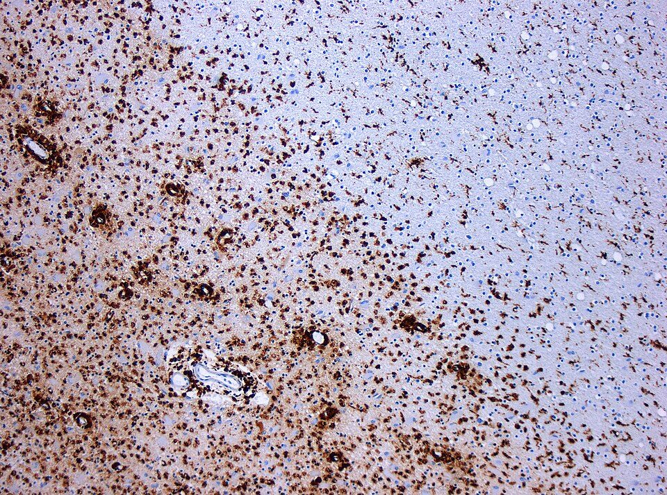

Tratamientos modificadores de la enfermedad
Su objetivo es reducir los brotes, las nuevas lesiones y la progresión de la discapacidad en la esclerosis múltiple. Actúan sobre el sistema inmunitario.
- Eficacia moderada: interferón beta y acetato de glatirámero (inyectables, desde los años noventa); teriflunomida y dimetilfumarato (orales).
- Eficacia alta: moduladores del receptor S1P (fingolimod, siponimod, ozanimod, ponesimod), cladribina oral (en ciclos cortos), y anticuerpos monoclonales: natalizumab, ocrelizumab, ofatumumab, ublituximab y alemtuzumab.
- Formas progresivas: el ocrelizumab es el primero aprobado para la forma primaria progresiva, y el siponimod para la secundaria progresiva activa.
Cómo se elige
Depende de la actividad de la enfermedad, la edad, el deseo de embarazo, otras enfermedades y los riesgos de cada fármaco. Cada vez más neurólogos defienden empezar pronto con un tratamiento de alta eficacia en pacientes con signos de mal pronóstico. Se vigila con resonancias periódicas.
Importante: algunos fármacos requieren controles específicos. Por ejemplo, con el natalizumab se vigila el virus JC por el riesgo de una infección cerebral rara (leucoencefalopatía multifocal progresiva). Antes de empezar se revisan las vacunas.
Otras líneas
- Trasplante autólogo de progenitores hematopoyéticos en casos muy activos y seleccionados.
- Inhibidores de la BTK (como tolebrutinib), que actúan también dentro del cerebro: algunos ensayos han mostrado un efecto sobre la progresión.
- Tratamiento de los síntomas (fatiga, espasticidad, vejiga) y rehabilitación.
Historia · Medicapedia
La historia de estos fármacos
Cómo se descubrió cada medicamento y cómo cambió el tratamiento, en Medicapedia, nuestra enciclopedia hermana de historia de la medicina.
Medicamentos · Farmacos.ai
Fichas de los fármacos
Para qué sirve cada medicamento, cómo se toma, efectos adversos e interacciones, con la ficha técnica oficial, en Farmacos.ai.
Fuentes
- Montalban X, et al. ECTRIMS/EAN Guideline on the pharmacological treatment of people with multiple sclerosis. Mult Scler. 2018;24:96-120. doi:10.1177/1352458517751049.
- National Multiple Sclerosis Society. Disease-modifying therapies.